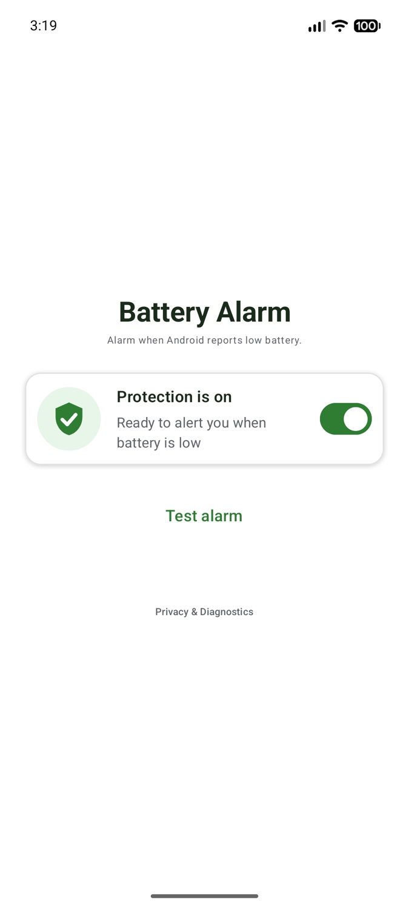
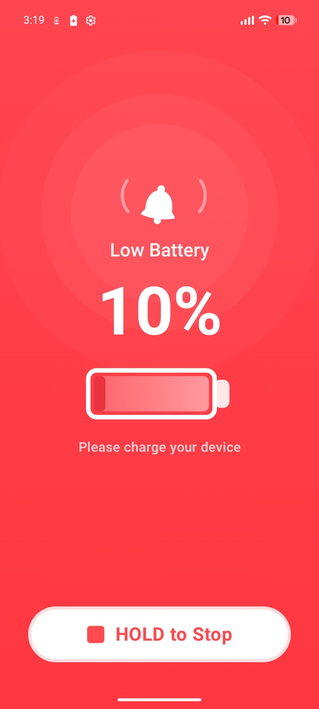
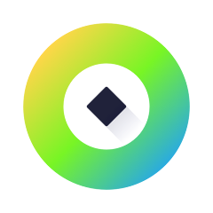
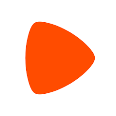

Featured project Open source · Kotlin
Battery Alarm
A focused Android utility that turns the system’s low-battery event into an audible, vibrating alarm with an actionable notification.


Senior Android / Kotlin Engineer
My recent work focuses on automotive Android: in-car navigation, offline maps and a commercial navigation SDK. I also built native features for MileIQ, which automatically tracks business mileage.
01 / Selected work
A small open-source Android app, built to show the decisions behind the code.
A focused Android utility that turns the system’s low-battery event into an audible, vibrating alarm with an actionable notification.


02 / Engineering highlights
Recent mobility engineering: in-car navigation, SDK lifecycle and concurrency, offline maps and automatic mileage tracking.
Drivers need regional maps offline; startup coordinates map loading and migrations.
Download coordination, tile versioning, migration flows and the vehicle startup sequence.
Replaced fragile imperative orchestration with reactive state and testable use cases.
Offline navigation in production vehicles and fewer startup-related crashes.
SDK initialization, shutdown and shared state must remain predictable for client apps.
Core lifecycle behavior, native-engine integration and public API improvements.
Clarified lifecycle contracts and synchronization; reproduced defects with focused regression tests.
More predictable resource ownership and thread-safe lifecycle operations.
A complex drives flow needed responsive editing, caching and undo behavior.
Rewrote the module from React Native to Kotlin and Compose, including search and animated list editing.
Established a UseCase → Repository → Mapper → UI State flow with focused responsibilities.
The reactive pattern was adopted by other teams and reused in later modules.
Field teams edit map data in places with unreliable or absent internet.
An offline-first data path using Room, Firestore and a local cache.
Separated map behavior into reactive use cases and added unit and instrumentation tests.
Local changes could sync when connectivity returned; the core flow had a substantial test suite.
03 / Public products
Five project groups from my CV, with seven current Google Play listings.

Offline-first field mapping and scouting workflows for agricultural operations.
Automatic mileage tracking; native Kotlin and Compose rewrite of the drives module.
Construction time tracking, project workflows and Kotlin migration.

Product Details delivery and migration work for a large-scale European Android app.
Air and rail booking, shared white-label flows, Kotlin adoption and team leadership.
Zeekr Navi is an in-vehicle navigation product distributed through the vehicle’s app store, so it has no Google Play link here.
04 / Courses
Four public courses, taught in Ukrainian. 115,220 total views.
Open all courses on YouTube| Course | Videos | Views |
|---|---|---|
| Kotlin Programming from Scratch | 61 | 101,185 |
| Android Calculator App (In Development) | 25 | 6,082 |
| Your First Android App | 10 | 6,720 |
| OOP Principles: Encapsulation, Inheritance, Abstraction & Polymorphism | 6 | 1,233 |
05 / Teaching & mentorship
I teach Android from the fundamentals up, with a structured path, practical assignments and feedback on real code.
06 / Experience
Selected roles from my Android engineering career.
Automotive navigation first, followed by navigation SDK core engineering: offline maps, vehicle startup reliability, lifecycle and concurrency.
Product Details delivery and migration work for a large-scale European Android app.
MileIQ, an eSIM travel app and Svenn: native Compose, Kotlin Multiplatform, reactive architecture and testing.
Android engineering for the M1 project.
Seetree agricultural mapping platform with offline-first sync and a substantial automated test suite.
Air and rail ticket apps, white-label products, Kotlin adoption, testing and mentoring.
07 / About
I taught myself to build Android apps, then grew through years of shipping products with international teams. The work I enjoy most is making complex behavior easier to reason about — especially when a device is offline, a lifecycle changes or several parts of a system move at once.
I care about clear boundaries, tests that protect real behavior, and explanations that help another engineer make a good decision without needing a map of the whole codebase.
07 / Contact
For Android engineering, architecture or mentoring conversations.
kravetapp@gmail.com